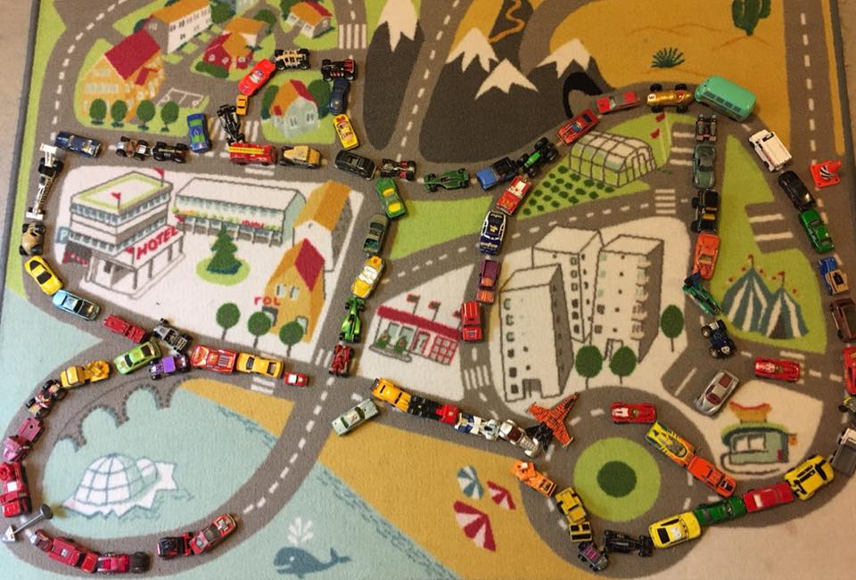
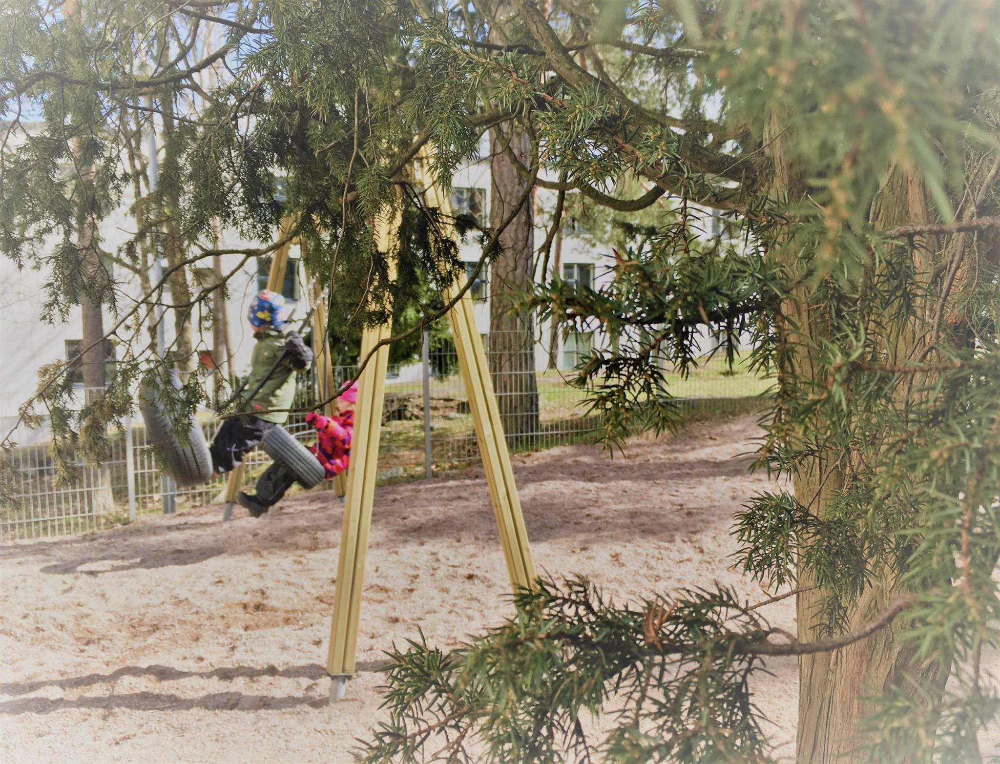
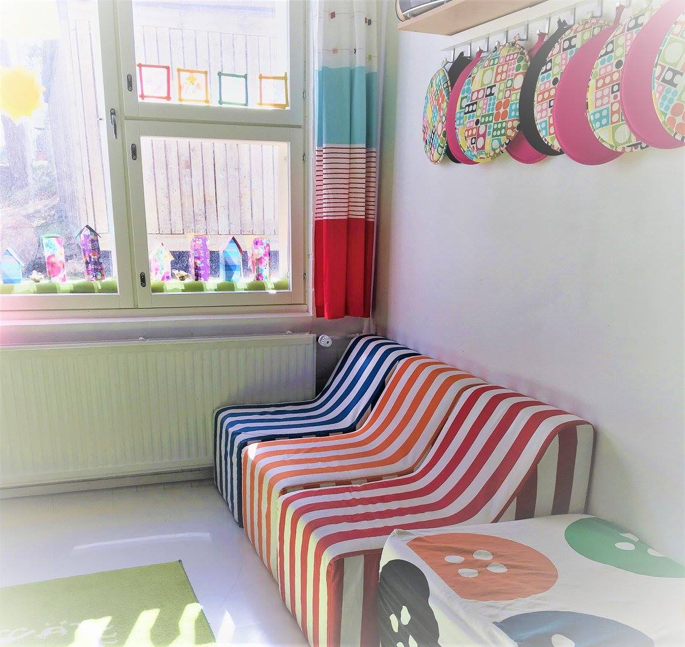

Päiväkoti Onnenmyyrä
-Kodinomaista hoitoa lapsillesi-



Päiväkoti Onnenmyyrä on Espoon Kivenlahdessa vuodesta 1994 toiminut yksityinen päiväkoti. Päiväkodin omistaa
voittoa tavoittelematon Päiväkotiyhdistys Onnenmyyrä ry, joka koostuu hoidossa olevien lasten perheistä.
Tarjoamme päivähoitoa kodinomaisessa ympäristössä, kerrostalon kivijalassa Kivenlahden Maininkitiellä,
alunperin päiväkodiksi suunnitelluissa tiloissa. Sisarusryhmässämme on 18 hoitopaikkaa 0-5 -vuotiaille lapsille.
Päiväkodissamme työskentelee kaksi opettajaa ja kaksi lastenhoitajaa.
Kodinomaisuus tarkoittaa meille pientä päiväkotia ja ryhmää, jossa kaikenikäiset toimivat yhdessä.
Näin isommat oppivat luontevasti huomioimaan ja auttamaan pienempiä ja pienet voivat katsoa mallia isommista.
Turvallinen ympäristö ja lasten osallisuus ovat tärkeä osa toimintaamme. Olemme aidosti kiinnostuneita lasten
ajatuksista ja lapsia kuuntelemalla sekä heidän toimintaansa seuraamalla suunnittelemme päiväkodin toimintaa
kulloisenkin lapsiryhmän kiinnostuksen kohteista käsin. Tarjoamalla lapsille monipuolista toimintaa ja uusia
kokemuksia haluamme tukea omatoimisuuden, ajattelun, itsetunnon ja luovuuden kehittymistä.
Tarkemmin pääset tutustumaan toimintaamme varaamalla ajan tutustumiskäynnille. Päiväkotiimme haetaan omalla päivähoitohakemuksella, jonka saatte meiltä esimerkiksi tutustumiskäynnin yhteydessä. Olet myös tervetullut seuraamaan meitä Facebookissa!
Tarkemmin pääset tutustumaan toimintaamme varaamalla ajan tutustumiskäynnille. Päiväkotiimme haetaan omalla päivähoitohakemuksella, jonka saatte meiltä esimerkiksi tutustumiskäynnin yhteydessä. Olet myös tervetullut seuraamaan meitä Facebookissa!